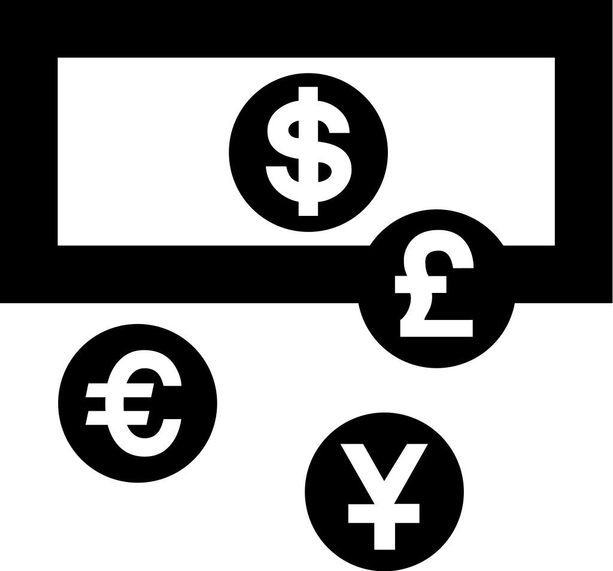

Numismatics
From Wikipedia, the free encyclopedia
This article is about numismatics as an academic discipline. For collecting, see Coin collecting.
Numismatics is the study or collection of currency, including coins, tokens, paper money, medals and related objects.
Specialists, known as numismatists, are often characterized as students or collectors of coins, but the discipline also includes the broader study of money and other means of payment used to resolve debts and exchange goods.
The earliest forms of money used by people are categorised by collectors as "odd and curious",[1] but the use of other goods in barter exchange is excluded, even where used as a circulating currency (e.g., cigarettes or instant noodles in prison).[2] As an example, the Kyrgyz people used horses as the principal currency unit, and gave small change in lambskins;[3] the lambskins may be suitable for numismatic study, but the horses are not.[dubious – discuss] Many objects have been used for centuries, such as cowry shells, precious metals, cocoa beans, large stones, and gems.
Part of a series on |
Numismatics the study of currency |
 |
Production |
Collection |
Numismatics portal Money portal | V T R |